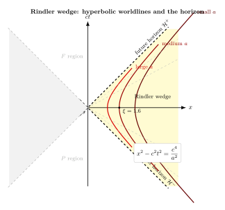

匀加速观察者的世界长什么样?
第 4 节我们把 Minkowski 时空写成 $\mathrm{d}s^2 = -c^2\,\mathrm{d}t^2 + \mathrm{d}x^2 + \mathrm{d}y^2 + \mathrm{d}z^2$, 看见光锥 $\mathrm{d}s^2 = 0$ 把因果结构钉死: 任何信号都待在光锥之内. 但读到那里你或许会有一个疑虑: 既然 SR 是相对的, 为什么我们一直在讲惯性观察者? 一个不停加速的人, 他眼里的时空长什么样? 等效原理已经告诉我们, 这位加速观察者在足够小的局部里和"站在引力场中静止的人"是无法区分的 — 那么他眼里的几何, 也许就是黑洞视界附近几何最干净的素描.
答案出乎意料地丰富. 仅在 Minkowski 平面 $(t, x)$ 里, 一个保持恒定固有加速度的观察者 — 想象一个永不熄火的火箭 — 就已经能"造出"一道视界. 这道视界不是黑洞那样物质堆出来的, 而是观察者运动状态本身造成的: 他抛在身后的某一片时空, 永远再也接收不到. 这一节把这个现象算清楚, 它会成为我们后面讲黑洞表面引力与 Hawking 辐射的最干净的预演. 我们的路径很短: 写下"恒定固有加速度"的精确含义 → 解一条 ODE 得双曲线 (3) → 用双曲线半径换坐标得 Rindler 度规 (5) → 看到视界 → 量子化场得 Unruh 温度 (6). 整条线索连起来, 就是 Hawking 1974 那个著名计算的"线性近似版".
一、恒定固有加速度的世界线 — 一条双曲线
"恒定固有加速度"的意思是: 火箭里的乘客感到稳定的 $g$ 力 (你站在地面上感到的就是). 它不等于在惯性系里的 $\mathrm{d}^2 x / \mathrm{d}t^2 =\,$常数 — 那条直线最终会让速度超过 $c$, 不允许. 正确的写法用固有时 $\tau$ (火箭里挂的钟) 与四加速 $a^\mu$:
$$ a^\mu a_\mu = a^2, \quad a^\mu = \frac{\mathrm{d}^2 x^\mu}{\mathrm{d}\tau^2}. \tag{1}$$
方程 (1) 说四加速的不变模长是恒定的 $a$. 在某一惯性系 $(t,x)$ 里 (火箭沿 $+x$ 方向加速, 起点 $\tau=0$ 时在 $x=c^2/a$, 静止), 解这个 ODE 得
$$ x(\tau) = \frac{c^2}{a}\cosh\!\left(\frac{a\tau}{c}\right), \qquad t(\tau) = \frac{c}{a}\sinh\!\left(\frac{a\tau}{c}\right). \tag{2}$$
消去 $\tau$ 立刻得到
$$ x^2 - c^2 t^2 \;=\; \frac{c^4}{a^2}. \tag{3}$$
这是一条双曲线, 顶点在 $x=c^2/a$, 渐近线是 $ct = \pm x$. 当 $\tau\to+\infty$ 时, 速度 $v = \mathrm{d}x/\mathrm{d}t = c\,\tanh(a\tau/c) \to c$, 但永远到不了 $c$ — 双曲线越来越贴渐近线, 永远在它下面. 这就是 SR 自洽地实现"恒定加速": 在乘客自己的钟看, 始终是 $g$; 在外面的惯性系看, 速度趋近光速却到不了. 双曲函数在这里不是巧合 — Lorentz boost 的群参数本身就是快度 (rapidity) $\eta = \mathrm{atanh}(v/c)$, 而 (2) 的 $a\tau/c$ 正是火箭累积的快度. 一句话: 加速观察者在快度空间里走的是匀速直线, 在 $(t,x)$ 空间里看就是一条双曲线.
地面上的"加速火箭". 把 $a = g = 9.8\,\mathrm{m/s^2}$ 代入. 双曲线顶点 $x = c^2/g \approx (3\times 10^8)^2 / 9.8 \approx 9.2 \times 10^{15}\,\mathrm{m} \approx 0.97$ 光年. 这数字告诉我们: 在地球表面静止站立的我 (相对 free-fall 框架, 我的固有加速度就是 $g$), 我的"有效双曲线顶点"在差不多一光年外. 视界距离这么远, 难怪我们感觉不到它的存在. 把同样的 $a$ 翻一翻方向也可以问: 想体验"双曲线顶点就在一米开外", 我得多快? $\xi = 1\,\mathrm{m}$ 对应 $a = c^2/\xi = 9\times 10^{16}\,\mathrm{m/s^2}$, 也就是 $\sim 10^{16}\,g$. 这种加速度只有在重核加速器或脉冲激光焦点附近的电子身上才会短暂出现.
到达光速近邻要多久? 把 $v = 0.99\,c$ 代回 $v = c\tanh(a\tau/c)$ 得 $a\tau/c = \mathrm{atanh}(0.99) \approx 2.65$, 故 $\tau \approx 2.65 c/a \approx 0.84$ 年 ($a=g$ 时). 也就是说, 一艘以 $1\,g$ 持续加速的飞船里, 乘客自己的钟只过了大约 10 个月就以光速贴近度飞行了; 而在地面看, 这位 $\tau=0.84$ yr 的乘客已经走到了 $x \approx 0.30$ 光年外. 加速观察者的钟和地面观察者的钟之间的差异随 $\tau$ 指数级放大, 这是后面讲引力红移时反复用到的图景.

二、Rindler 坐标 — 加速观察者的"自然"地图
方程 (2) 提示一种自然的参数化: 把 $a\tau/c$ 看成角变量 $\eta$ (类似双曲三角中的"快度"), 把双曲线"半径" $c^2/a$ 当成径向坐标 $\xi$ (单位是长度). 一族不同的 $\xi$ 就是一族不同的 $a$ — 离原点近的观察者加速大, 离原点远的加速小. 写
$$ ct = \xi \,\sinh(\eta), \qquad x = \xi\,\cosh(\eta). \tag{4}$$
$\eta$ 无量纲 (类似快度), $\xi\gt 0$ 是长度. 这一对 $(\eta,\xi)$ 只能覆盖 $x\gt |ct|$ 的右楔形区域 (Rindler wedge) — 因为 $\cosh\geq 1\gt 0$ 且 $|\tanh|\lt 1$. 把 $\mathrm{d}t,\mathrm{d}x$ 算出来代回 Minkowski 线元 $\mathrm{d}s^2 = -c^2\mathrm{d}t^2 + \mathrm{d}x^2$, 经过几行三角恒等式 ($\cosh^2-\sinh^2 = 1$):
$$ \mathrm{d}s^2 \;=\; -\xi^2\,\mathrm{d}\eta^2 + \mathrm{d}\xi^2. \tag{5}$$
这就是Rindler 度规. 几个关键解读:
- $\xi=$ 常数 是世界线: 沿 $\eta$ 跑就是双曲线 (3), 一个具体的加速观察者. 他的固有加速度 $a = c^2/\xi$ — 越靠近 $\xi=0$, 越剧烈.
- $\eta=$ 常数 是同时面: 在加速观察者眼里, "同一时刻"的所有点构成一条过原点的射线 $ct/x = \tanh(\eta)$ (图 1 灰色虚线). 不同 $\eta$ 的同时面像扇子一样张开.
- $\xi\to 0$ 是奇点: 度规 $g_{\eta\eta} = -\xi^2 \to 0$ — 但这是坐标奇点, 不是物理奇点 (Minkowski 时空在那儿好得很; 是 Rindler 坐标自己破了). 这跟 Schwarzschild $r=r_s$ 处的"视界奇点"完全同性质.
固有加速度的对照. 方程 (4) 的"环面"上, $\xi=1\,\mathrm{m}$ 处观察者的固有加速 $a = c^2/\xi = 9\times 10^{16}\,\mathrm{m/s^2}$ — 大得离谱. $\xi=10^{16}\,\mathrm{m}$ 处则降到约 $9\,\mathrm{m/s^2}$, 也就是地面上的 $g$. 两端跨度 16 个数量级, 显示 Rindler 楔形并不是均匀的: 越靠视界的观察者越"剧烈".
"刚性加速火箭"为什么不刚性. 设想一个有限长的火箭, 头尾都保持恒定固有加速度. 头部在 $\xi_2$, 尾部在 $\xi_1 \lt \xi_2$, 共用同一个 $\eta$ 标记同时面. 在惯性系看, 头尾走在不同的双曲线上, 双曲线之间的"半径差"恒为 $\xi_2 - \xi_1$ — 然而尾部的固有加速 $c^2/\xi_1$ 比头部 $c^2/\xi_2$ 大. 这正是著名的 Bell 飞船悖论的几何根源: 如果你强行让头尾在惯性系里加速度相同, 那两条世界线之间的固有距离会被扯长, 把绳子撕断. 真正的"刚性加速"必须让加速度沿火箭线性递减 ($a = c^2/\xi$), 这就是 Rindler 楔形提供的天然"刚性同时面".
三、视界 — 一道由运动状态切出的因果墙
渐近线 $ct = x$ (取右半轴, $x\gt 0$) 在物理上意味着什么? 想象一束光从原点 $O$ 出发, 沿 $+x$ 方向直射. 它的世界线就是 $ct=x$. 现在这位匀加速观察者: 他的世界线是双曲线 (3), 始终在渐近线下方 — 这束光永远追不上他, 因为光的轨迹是渐近线本身, 而双曲线只在 $\tau\to\infty$ 时贴近.
更准确地说: 任何在 Minkowski 楔形 $ct \geq x$ 之内 (即原点的未来光锥之外, 渐近线之上) 发出的事件, 对这位加速观察者来说因果上不可达. 他无法接收来自那里的任何信号. 这道分隔墙就是 Rindler 视界 $\mathcal{H}^+: ct = x$, 它扮演与黑洞事件视界完全同构的角色.
"墙"的厉害之处不在它存在 (光锥本来就在), 而在: 它对加速观察者是静止的. 一个朝你飞奔但还没到的朋友, 他永远只是"还没到"; 但对加速观察者, 视界稳稳地与他同行, 永远在他的过去方向某一固定固有距离处. 在 Rindler 坐标 (5) 里, 视界对应 $\xi\to 0^+$, 是坐标的"原点"边界 — 像极了 Schwarzschild 度规 $\mathrm{d}s^2 = -(1-r_s/r)c^2\mathrm{d}t^2 + \mathrm{d}r^2/(1-r_s/r) + \cdots$ 在 $r\to r_s$ 处的退化.
"表面引力". 在 GR 里, 一个 Killing 视界有一个不变量叫表面引力 $\kappa$ (会在第 16 节细讲). 对 Schwarzschild 黑洞 $\kappa = c^4/(4GM)$, 对 Rindler 视界 $\kappa = a$ — 加速度本身就是表面引力. 这就是为什么 Rindler 是黑洞物理的最简模型: 把它恰好就是球对称黑洞在视界附近的近似几何 (展开 Schwarzschild 度规到视界附近最低阶, 得到的就是 Rindler).
引力红移先尝一口. 在 Rindler 楔形里两个静止观察者 ($\xi_1 \lt \xi_2$) 互发光信号, 由 (5) 知 $\eta$ 是它们共同的"时间坐标". 一束从 $\xi_1$ 发出的频率 $\omega_1$ 的光到达 $\xi_2$ 时, 频率变为 $\omega_2 = (\xi_1/\xi_2)\,\omega_1$. 红移因子是距离比而不是距离差, 这正是 Schwarzschild 红移 $\omega_\infty/\omega_R = \sqrt{1-r_s/R}$ 在视界附近的展开形式. 第 6 节我们会把这个观察推广到任意度规, 给出"引力红移 $\Leftrightarrow$ $g_{tt}$ 不为常数"的精准陈述.
四、Unruh 效应 — 加速即温度的预告
有了视界, 一旦把量子场论放进 Rindler 楔形里, 一件意想不到的事就发生: 一个对惯性观察者看起来空空如也的真空, 在加速观察者眼里却是一锅热的辐射浴. 温度由 Unruh 1976 算出:
$$ T_U \;=\; \frac{\hbar a}{2\pi c\, k_B}. \tag{6}$$
它的逻辑很直: 视界存在 $\Rightarrow$ 加速观察者只能"看到"楔形内部的场模式 $\Rightarrow$ 把楔形外的自由度求迹掉 (partial trace) $\Rightarrow$ 余下的态是热态, 温度由表面引力 $\kappa = a$ 决定. 这跟 Hawking 1974 算黑洞辐射的逻辑同构, 只把 $\kappa = c^4/4GM$ 替换成 $\kappa=a$ — 第 19 节会从这里出发讲 Hawking $T_H$.
地面上算一算. 取 $a = g = 9.8\,\mathrm{m/s^2}$, $\hbar = 1.055\times 10^{-34}\,\mathrm{J\cdot s}$, $c = 3\times 10^8\,\mathrm{m/s}$, $k_B = 1.381\times 10^{-23}\,\mathrm{J/K}$:
$$ T_U(g) = \frac{1.055\times 10^{-34} \cdot 9.8}{2\pi \cdot 3\times 10^8 \cdot 1.381\times 10^{-23}} \approx 4.0 \times 10^{-20}\,\mathrm{K}. \tag{7}$$
这数字比目前最低温度的实验本底 (约 $10^{-12}\,\mathrm{K}$) 还低 8 个数量级 — 测不到, 完全测不到. 那么有什么场景 $T_U$ 才显得出来? 把 (6) 反过来: 想要 $T_U = 1\,\mathrm{K}$, 需要 $a \approx 2\pi c k_B / \hbar \approx 2.5 \times 10^{20}\,\mathrm{m/s^2}$. 这是地球表面引力的两万亿亿倍 — 只在极端 QED 中加速电子或黑洞视界附近能接近. 这就解释了"为什么我们活在常温世界, 却没尝到 Unruh 暖意": 因为地面的 $a$ 实在太弱.
实验线索. 虽然 Unruh 效应至今没有干净的直接探测, 它的影子出现在好几处: 强场激光中加速电子的 Larmor 辐射会被 Unruh 修正; 圆周运动 (向心加速) 的 Sokolov-Ternov 电子极化也与 Unruh 相关; LHC 中夸克对撞瞬间的有效"温度"被解读为 $T_U$. 这些都是间接证据, 干净的桌面实验仍是开放问题. 类比探针 (analogue gravity) 在 BEC 与流体表面波里实现"声学视界", 也间接验证了"视界 + 量子涨落 = 热谱"这一核心论断.
历史顺序值得记一记. Wolfgang Rindler 1966 把这套加速坐标整理成现在的形式, 取名"hyperbolic motion" — 真正以他名字定型是后人. Bill Unruh 1976 (在 DeWitt 之后, Davies 几乎同期) 论证: 这个看起来纯几何的视界, 其实必然伴随一个温度. Unruh 的思路是把 Rindler 楔形里的 Bogoliubov 变换写下来, 直接看出 Minkowski 真空在 Rindler 模式上是热密度矩阵, 比例恰好是 (6). 这是量子场论与时空几何第一次产生纠缠: 哪怕不开 GR, 仅 Minkowski 时空里的加速观察者就已经看到熵. 沿着这条线再往前走一步, 就到了 Bekenstein-Hawking 黑洞熵 $S = A/4\ell_P^2$ — 视界面积本身就是熵, 这把引力、量子与热力学第一次缝合在同一行公式里.
小结
Rindler 楔形是 GR 的"前菜". 它告诉我们: 视界、表面引力、加速诱导温度, 这三件事在 Minkowski 平直时空里就已经出现 — 只是来源不是引力, 而是观察者的运动状态. 把整套语言搬到 Schwarzschild 黑洞上 (第 12, 16, 17 节) 几乎一字不动, 把 $a$ 换成 $\kappa = c^4/(4GM)$ 即可. 同样, Hawking 温度 $T_H = \hbar c^3 / (8\pi G M k_B)$ 与 Unruh 温度 (6) 是同一公式. 这是为什么物理学家说: 黑洞热力学不是 GR 多出来的奇异结果, 它的根扎在 Rindler 几何里 — 一旦时空有边界, 量子场就变成热的. 下一节我们把"度规"这个对象从 Minkowski / Rindler 推广到任意弯曲时空, 看 $g_{\mu\nu}$ 究竟编码了多少几何信息.
▲